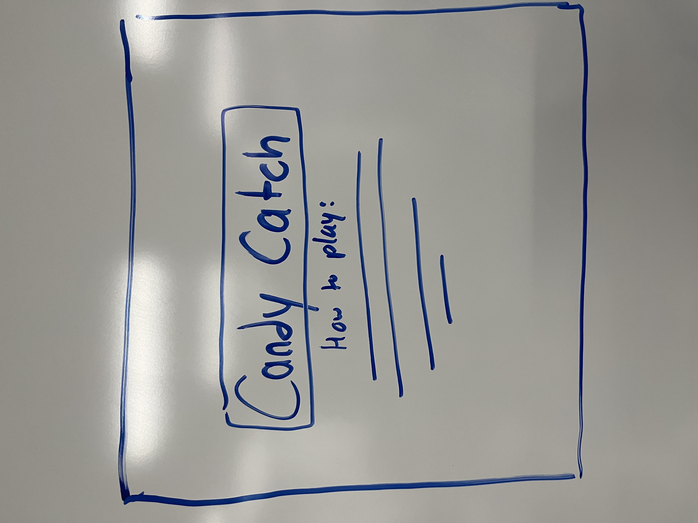
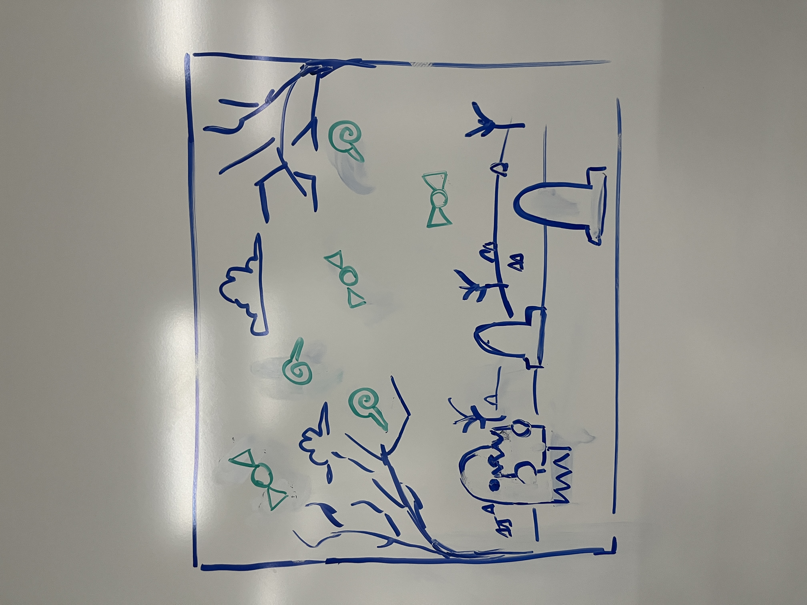
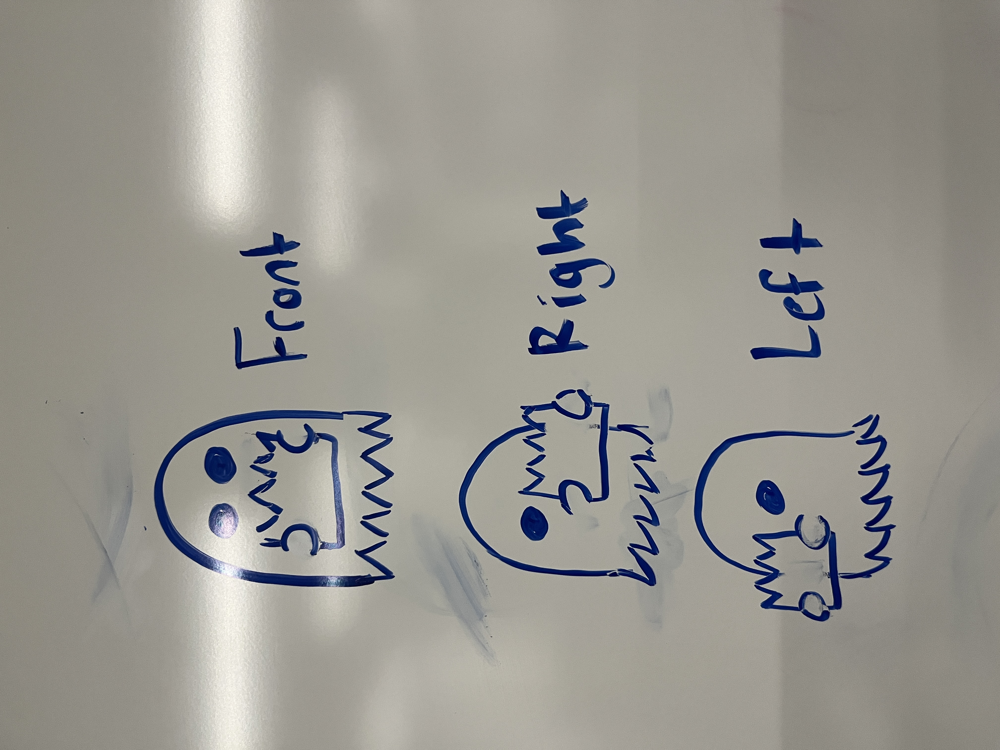

Candy Catch
High Concept
Players attempt to catch as much candy as possible before catching too many vegetables in their candy basket. They must move side to side to collect the pieces falling from the sky while avoiding the vegetables.
Genre
Family, Arcade, Casual
Platform
Desktop only
Story
You play as a little ghost trying to collect candies and avoid vegetables.
There is no real plot, other than a ghost just wanting some candy. The mood is meant to be lighthearted and cute.
The player is trying to help the ghost collect as much candy as possible before too many lives are lost and the game ends.
Aesthetics
Graphics style - Very cartoonish/cute pixalated style
Pixal art for the background, ghost character, different candies, and different vegetables.
Sound - 8-bit. simple
Different sounds will play for collecting candy vs collecting a vegetables
Gameplay
Mechanics
Move the ghost left and right across the screen to collect candies in the candy bag and watch out for vegetables.
Control
The left/right arrow keys are used on the keyboard to move the character back and forth across the screen.
Teaching the game/New user experience aka "Onboarding"
There will be an instructions screen after the user first presses start that will provide instructions for what the user is supposed to do. It will also display the controls needed to play.
Player learning
The player needs to learn how to move the character back and forth across the screen to collect the candies that fall from the top of the screen, earning them points. Additionally, the player must be cautious of vegetables falling in place of candies, as this will result in the loss of a life.
Screenshots
  Other
Here is a good example of the sort of game I want to make functionalitly wise. https://qualifio.com/blog/catcher-game-engaging-christmas-experience-community/
About the developer
Hello, my name is Jackson Heim. I am a second year new media development major in the colllege of computing sciences. Although I am fairly new to coding, I have really enjoyed it. My interests include simple programming, website design/development, illustration, and animation. My dream has always been to make a simple visual novel game, but unfortunatly that didnt happen this time.
Documentation
Process
When making this game, I started by getting a working object to move across the screen with the arrow
keys.
From there I switched between working on the code and creating the art that would be used in the
game until I had a working game with all the parts I wanted. I then added the sounds and made all
the screens look visually pleasing.
I used these examples from online as a reference to create my art for the art for the game.
Sources
Images
All images used are my own. I drew them myself using piskel.com
Sounds
Found online from mixkit.co
Fonts
Used google fonts fonts.google.com
Extra information
Had to use chatGPT to get the font to load before starting up the application
refresh page when playing again.
Also used chatgpt to help debug when I was stuck.
Used some
of the
starter code from circle blast in this project, like for the utilities and making text and buttons
for the
pages.
IMPORTANT
From what Ive tested, the game sounds only work on chrome. So please use chrome. Thank you. :)